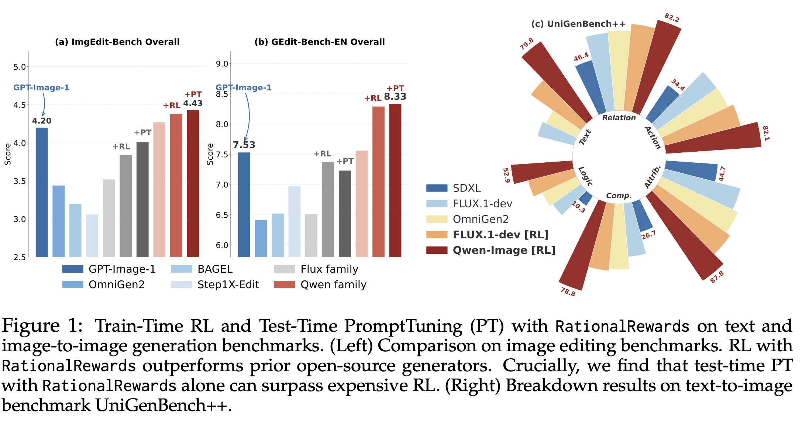
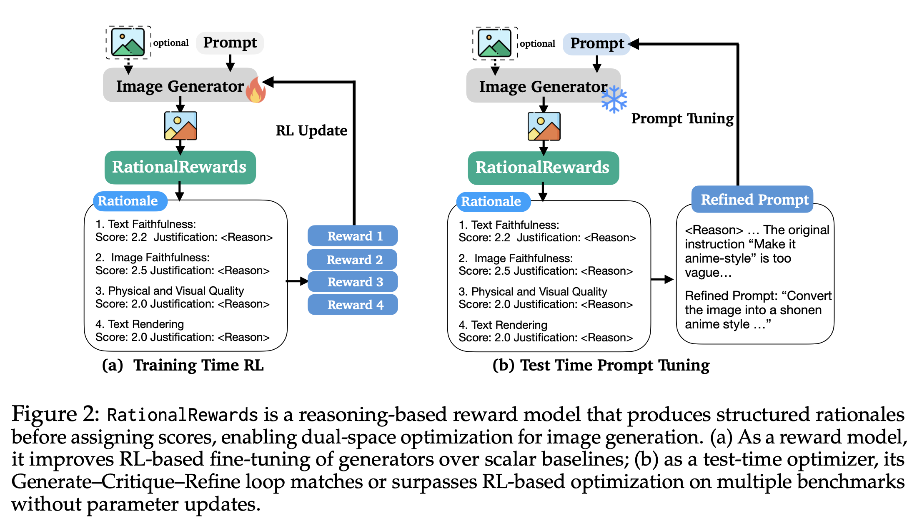
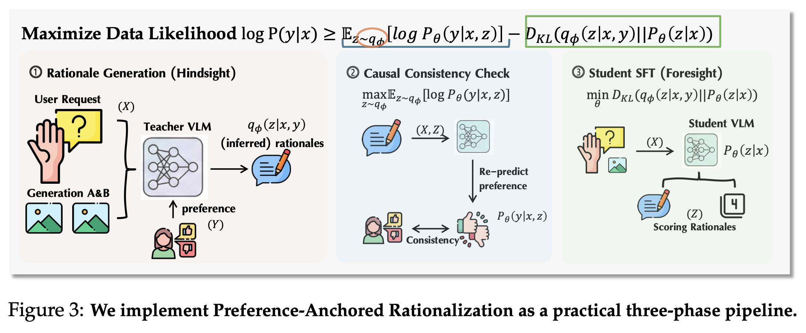
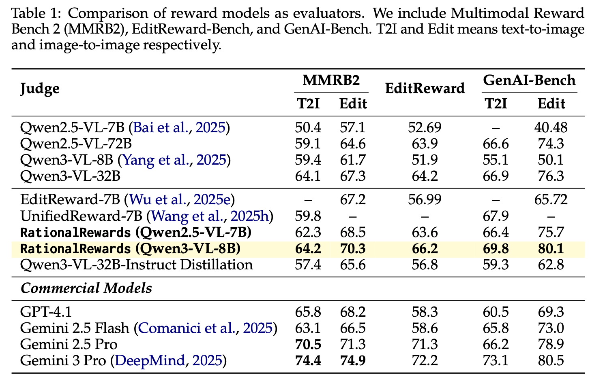
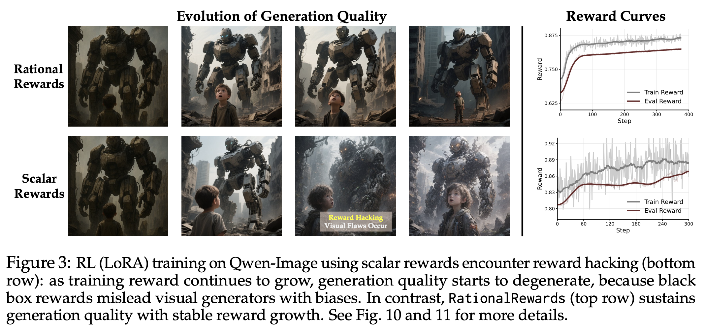
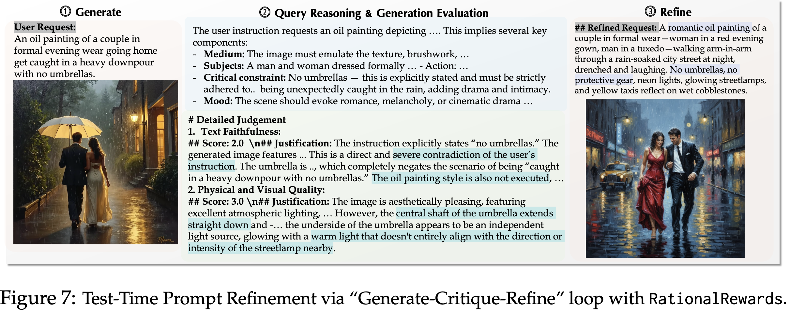
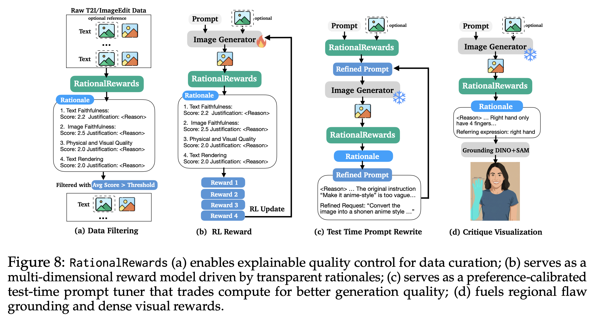

Abstract
Most reward models for visual generation reduce rich human judgments to a single unexplained score, discarding the reasoning that underlies preference. We show that teaching reward models to produce explicit, multi-dimensional critiques before scoring transforms them from passive evaluators into active optimization tools.
RationalRewards improves generators in two complementary ways. At training time, structured rationales provide interpretable, fine-grained rewards for reinforcement learning. At test time, a Generate-Critique-Refine loop turns critiques into targeted prompt revisions that improve outputs without parameter updates.
To train this behavior without costly rationale annotation, we introduce Preference-Anchored Rationalization (PARROT), a practical framework with anchored generation, consistency filtering, and distillation. RationalRewards (8B) reaches state-of-the-art preference prediction among open-source reward models, while using 10-20 times less training data than comparable scalar baselines.
Main Results at a Glance
Instantiated via PARROT on a Qwen3-VL-Instruct-8B backbone, RationalRewards achieves state-of-the-art preference prediction among open-source reward models and remains competitive with Gemini-2.5-Pro. As an RL reward, it consistently improves generators beyond scalar baselines across both text-to-image and image-editing tasks. Most interestingly, RationalRewards' single-iteration test-time prompt tuning matches or exceeds RL-based fine-tuning on several benchmarks. This suggests that visual generators possess dormant capabilities that leaves substantial room for improvement via test-time prompt tuning.

Why Reasoning Rewards?
Traditional scalar reward models compress instruction faithfulness, visual quality, composition, and plausibility into one opaque number. That collapse discards the structure of human judgment and makes optimization brittle. RationalRewards keeps these dimensions explicit, so generators receive feedback that is interpretable and directly tied to what should change.
This shift turns the reward model from a passive evaluator into an optimization interface. During RL, the critique dimensions produce denser learning signals; during inference, they become targeted edits to prompts in a Generate-Critique-Refine loop.

Preference-Anchored Rationalization (PARROT)
High-quality rationale supervision is expensive to annotate manually, so we recover it from existing pairwise preference data. PARROT starts with a teacher VLM to generate preference-anchored critique candidates, filters out inconsistent explanations, then distills the remaining rationales into an 8B student that can critique without seeing labels.
In practice, this bridges theory and scale: it treats rationales as latent variables while remaining a practical three-stage pipeline that can be trained with much less data than comparable scalar baselines.

Preference Prediction and Alignment Quality
A first requirement for any reward model is to predict pairwise human preference reliably. RationalRewards achieves state-of-the-art performance among open-source baselines, while staying competitive with strong closed models. This indicates that explicit critiques do not trade off against ranking accuracy; they strengthen it.

Robustness Against Reward Hacking
Scalar rewards can be exploited by superficial correlations that do not reflect real user intent. RationalRewards mitigates this by forcing explicit explanation channels, which makes optimization more semantically grounded and less prone to reward hacking. We also hypothesize that advancements in diffusion RL might be bottlenecked by reward models, and we envision the stability and accuracy of RationalRewards as a key enabler for further research in diffusion RL methods.

Test-Time Generate-Critique-Refine
Beyond serving as an RL reward, RationalRewards can be used after image generation to critique outputs and rewrite prompts toward better fidelity. This test-time optimization path requires no parameter updates and can recover performance that would otherwise need costly fine-tuning.

Additional Use Cases
The same reasoning feedback supports a broad set of workflows, including quality diagnosis, post-hoc correction, and generation loop control. This flexibility comes from keeping critique structure explicit instead of collapsing all judgment dimensions into a scalar.

Citation
If you find RationalRewards useful in your research, please cite:
@article{rationalrewards2026,
title = {RationalRewards: Reasoning Rewards Scale Visual Generation at both Training and Test Time},
author = {Haozhe Wang and Cong Wei and Weiming Ren and Jiaming Liu and Fangzhen Lin and Wenhu Chen},
journal = {arXiv preprint},
year = {2026}
}